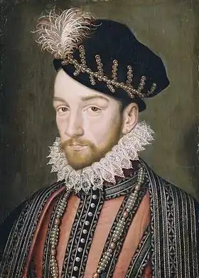

РОНСАР, П'єр де (Ronsard, Pierre de — 11.09.1524, замок Ла-Пуасоньєр, Вандомуа — 27.12.1585, абатство Сен-Ком, Турень) — французький поет.Ронсар належав до вельможної дворянської родини, навчався у Наваррському колежі в Парижі (1533—1534), був пажем при дворі сина Франціска І герцога Карла Орлеанського і принцеси Мадлен (1536— 1537). У 1540 р. потрапив до почету королівських дипломатичних посланців, відвідав Фландрію, Шотландію, Італію та Німеччину. Але у 18 років Ронсар раптово оглух і був змушений припинити дипломатичну кар'єру. Він відмовився від придворного життя и упродовж кількох років вивчав стародавні мови, поезію та філософію в колежі Кокре. Навколо відомого вченого Ж. Дора тут гуртувалися вчені та літератори, серед яких Ронсар зустрів майбутніх друзів і однодумців. Спільнота молодих поетів отримала назву "Плеяда" на згадку про "сузір'я" александрійських поетів III ст. до н. є. — Феокріта, Лікофрона, Гомера Молодшого та ін. Становлення "Плеяди" як єдиної національної поетичної школи відбувалося у боротьбі з традиційною куртуазно-аристократичною та університетською поезією.
У маніфесті "Захист і звеличення французької мови" ("La Defense et illustration de la langue franchise", 1549), написаному Ж. дю Белле за участю Ронсара, йшлося про план всеосяжної поетичної реформи. Маючи на меті оновлення французької мови, Ронсар і дю Белле звернулися до традицій античної літератури, яку вони вважали невичерпним джерелом мовних скарбів. Провідну роль у "Захисті "відіграє арістотелівське поняття наслідування, переосмислене в дусі Ренесансу; Ронсар і дю Белле вважають античну поезію не так предметом копіювання, як стимулом для творчої діяльності. "Плеяда" прагнула перебудувати жанрову систему за допомогою відродження у французькій літературі ліричних і драматичних жанрів античності — оди, елегії, епіграми, сатири, послання, еклоги, трагедії та комедії. Потужний вплив поезії італійського Ренесансу на французьку поезію XVI ст. зумовив інтерес Ронсара та дю Белле до жанру сонету. Спираючись на античне уявлення про місію поета, Ронсар і дю Белле розвивали вчення про поетичне натхнення. У цій сфері вони загалом дотримувалися поглядів Платона, трактуючи поета як пророка, просвітленого божественним натхненням. Та, з іншого боку, члени "Плеяди" вірили в існування загальнообов'язкових правил поетичної майстерності. Згодом ці ідеї стали наріжним каменем естетики класицизму.
Дотримуючись приписів "Захисту", Ронсар прагнув творити "високу поезію". У своїй першій поетичній збірці "Оди" ("Odes", 1550) він послуговується формою піндаричної та гораціанської оди для вираження притаманного епосі Ренесансу життєрадісного світосприйняття. Провідна тема збірки — перемога людського духу над часом — лунає в різних регістрах. У піндаричних одах вона постає як урочисте звеличення подвигів і безсмертя, а в гораціанських одах тема набуває інтимнішого, особистіснішого характеру. У центрі уваги опиняється людина, яка відкриває для себе красу навколишнього світу і усамітнюється на лоні природи, щоби втішатися радощами спокійного сільського життя. Перше десятиліття творчості Ронсара — період поетичних експериментів, позначений яскравими знахідками і болісними помилками. Спроба Ронсара прищепите піндаричну оду на французький ґрунт виявилася невдалою. Намагаючись створити універсальний ліричний жанр, здатний охопити широке коло тем і мотивів, Ронсар звернувся до сонета. Героїню сонетного циклу "Кохання до Кассандри" ("Le Premier Livre des Amours", 1552— 1553), доньку багатого флорентійського банкіра Кассандру Сальвіаті, Ронсар зустрів під час королівського балу у Блуа у 1545 р. Зазнавши помітного впливу петраркізму, поет оспівує піднесене і нерозділене кохання. Найбільшу увагу Ронсар приділяє психологічним аспектам любовної пристрасті: Скоріше в небі згасне сяйво зір,І в океані стверднуть буйні хвилі,І спиняться під сонцем скам'янілі,І заніміє їх незмірний шир;Скоріш поваляться громаддя гір,Усе змішається у заметілі, Ніж стану я рабом красуні білійЧи вразить мій зеленоока зір.О карі очі! Як я вас кохаю,Яким вогнем душі до вас палаю!А голубим очам я ворог злий.Чи житиму, чи у могилі буду, Очей ніколи карих не забуду,Двох сонць небесних у душі моїй.("Скоріше в небі...", тут і далі пер. Ф. Скляра)У тому ж таки 1553 p. Ронсар опублікував "Книжку пустощів" ("Livret de Folastries"), яка мала характер зухвалого виклику. У "Пустощах" вперше пролунали близькі до анакреонтівської традиції мотиви, які поет продовжив і розвинув у збірках "Гай" ("Boccage", 1554) і "Суміші"("Melanges", 1555). Вдаючись до невеликих за обсягом жанрів — присвяти, епітафії, оделетти, похвального та сатиричного опису, Ронсар поєднує у цих збірках анакреонтівську лінію (мотиви насолоди щасливими миттєвостями швидкоплинного життя) із середньовічною лінією, джерелом якої були поезія трубадурів і народна пісня XV ст. З цього погляду особливого значення для Ронсара набуває ставлення до природи. Вона має не лише естетичну, а й філософську вартісність, виступає у ролі порадниці поета, відкриваючи перед його очима всеосяжний домен природності та добра. Поетизація природи тісно пов'язана у Ронсара з гуманістичним міфом про "золотий вік". У вірші "Блаженні острови" ("Les Isles Fortunes") постає образ островів, загублених серед океану, де поет шукає притулку від життєвих злигоднів. Прикметними рисами зрілої лірики Ронсара є гнучкість і дивовижна мелодійність. Музикальність була для Ронсара неодмінною передумовою ліризму. Незважаючи на свою глухоту, Ронсар був неабияким шанувальником музичного мистецтва і сам непогано грав на лютні. Він часто відвідував зібрання Академії поезії та музики. Академію очолював друг Ронсара, поет "Плеяди" Ж. А. де Баїф, котрий мріяв про зближення музики та поезії і пропагував античний метричний вірш. "Плеяда" здійснила метричну реформу, утвердивши панування строфічного принципу ліричної поезії. Оновлення ліричних форм збагачувало французьку поезію новими виражальними засобами. Ронсар розробив структуру десятискладового вірша, яку згодом розвинув класицист Ф. Малерб. Працюючи над циклами сонетів, присвячених Марії ("Continuation des Amours", 1555; "Nouvelle Continuation des Amours", 1556), P. використав дванадцятискладовий александрійський вірш, який згодом набув широкого застосування у творчості романтиків. Образ простої селянської дівчини Марії Дюпен, з якою Ронсар познайомився в Бурґейлі, гостюючи у свого брата-єпископа, дуже відрізняється від образу Кассандри. Кохання для Ронсар втрачає міфологічну піднесеність і містицизм, він заперечує неоплатонічну ідеалізацію жінки, що панувала у петрарківській ліриці: Лиш смерть — заступниця моя.Шаную смерть віднині яІ вище честі, й більше слави,Бо перед смертю ти ніщо.Нащо дозволила, нащоВзять те, що цвітом є держави?Чи близько Бога ти в цей час, А чи в раю, — прощай сто раз,Прощай, Марі, і в домовині.Тебе від мене смерть взяла,Та й смерть не розітне вузла,Який зв'язав нас воєдино.("О небо, скільки в тебе зла...") У цей період, окрім сонетних циклів, Ронсар також працював над "Гімнами" ("Hymnes", 1555-1556), у яких порушував важливі моральні та філософські проблеми. Поет протиставляє величній гармонії космосу те безладдя, що панує на землі, а вічності Всесвіту — скороминущість людського життя. У "Гімні смерті" ("Hymne de la mort") Ронсар поєднує середньовічно-християнське зображення смерті з поганським. Наприкінці 50-х pp. XVI ст. у Франції почалися релігійні війни. Захоплений ідеєю національної єдності, Ронсар став прибічником католицької партії і оприлюднив низку поетичних памфлетів "Роздуми про злигодні нашого часу" ("Discours sur les miseres de се temps", 1562). Переконаний у тому, що в період загострення ідеологічної боротьби суспільне значення поетичної творчості зростає і поет має право говорити з монархами і вельможами як з рівними, Ронсар закликав співвітчизників до миру. Громадянські мотиви, які пролунали у "Роздумах", виразно помітні й у "Франсіаді" ("Franciade"), над якою Ронсар розпочав працювати у 1564 р. Поет сподівався створити національну епопею, про яку йшлося у "Захисті", і звернувся з цією метою до середньовічної легенди, що постала на ґрунті "Енеїди" Верґілія. Варто зауважити, що цю легенду про походження європейських націй від стародавніх героїв-троянців Ронсар згадував іще в "Гімні Франції" ("Hymne de la France", 1549). Проте, працюючи над "Франсіадою", поет прагнув синтезувати античний досвід і національну епічну традицію. Спроба виявилася невдалою; опублікувавши у 1572 р. перші чотири пісні епопеї, Ронсар припинив працю над нею. У пізній ліриці Ронсара особливу роль відіграють мотиви дисгармонії між ренесансним ідеалом і навколишньою дійсністю. Вельми прикметною з цього погляду є елегія "Проти лісорубів Ґастінзького лісу" ("Contre les bucherons de la foret de Gastine"), яку Ронсар написав у середині 70-х pp. й опублікував у 1584 р. Знищення улюбленого куточка природи (предки Ронсара були лісниками Ґастінзької пущі) символізує для поета загибель культури, прекрасного світу античних богів. В останній збірці інтимної лірики "Сонети до Єлени" ("Sonnets pour Helene", 1578) з'являються маньєристичні елементи, пов'язані з частковим поверненням Ронсара до неоплатонічної концепції кохання; поет постійно корелює образ своєї коханої з ідеальною моделлю. Незважаючи на щирий трагізм пізнього кохання, він оспівує внутрішню людську гармонію. Провідна тема збірки — тема нерозділеного кохання — поєднується з мотивом осінньої природи. В останні роки життя Ронсар редагував свої давні вірші, що мали увійти до повного зібрання його творів. Після того, як влітку 1585 р. це видання побачило світ, Ронсар, відчуваючи наближення смерті, написав свій поетичний заповіт, просякнутий духом щирої релігійності. Ще за життя Ронсара визнали "принцом поетів". Проте з початку XVII ст. і до початку XIX ст. його поезією майже не цікавилися, і лише у 1828 р. творчість Ронсара по-новому "відкрив" відомий критик Ш.О. Сент-Бев. Українською мовою ряд віршів Ронсара переклали М. Зеров і М. Терещенко, а основному масиву поетичної спадщини Ронсара вітчизняний читач завдячує перекладам Ф. Скляра. Є. Харитонов